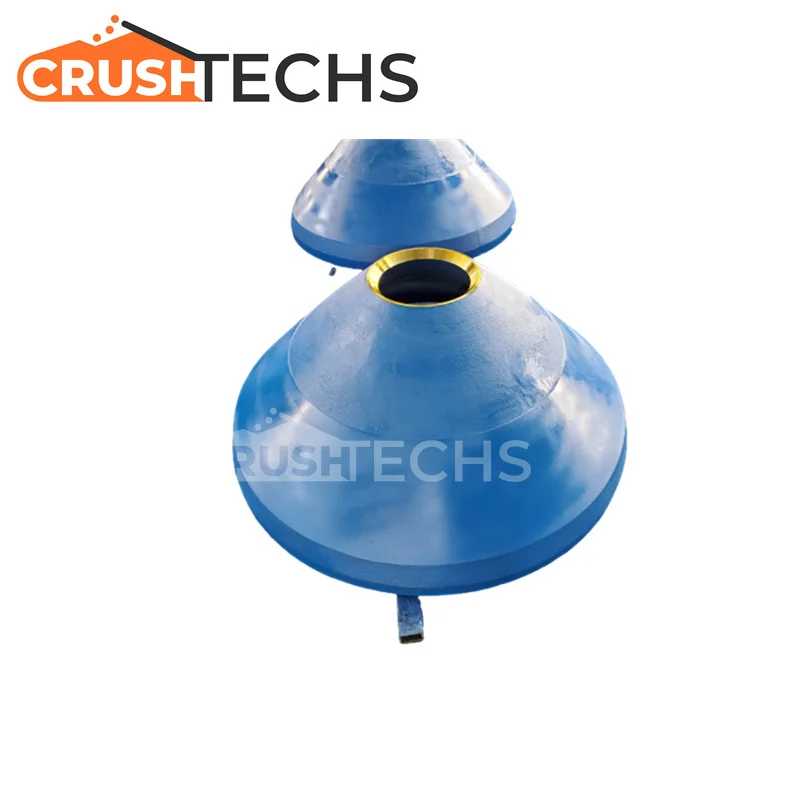
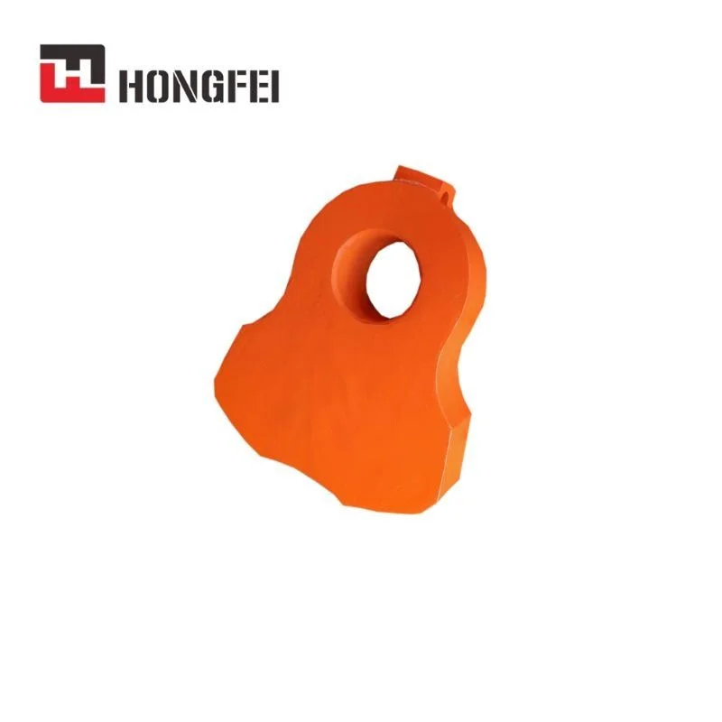
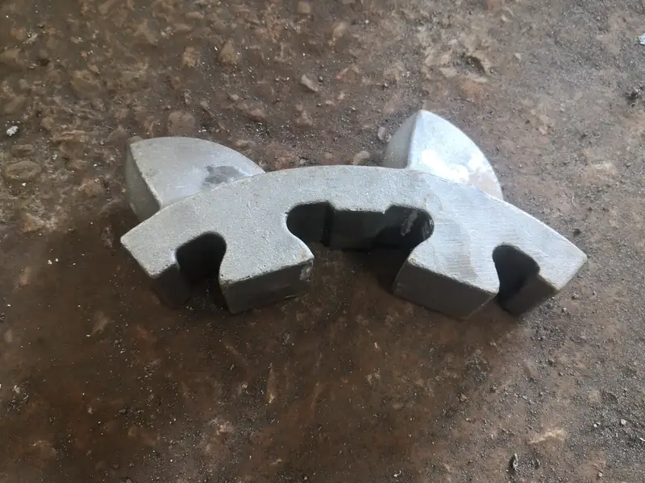
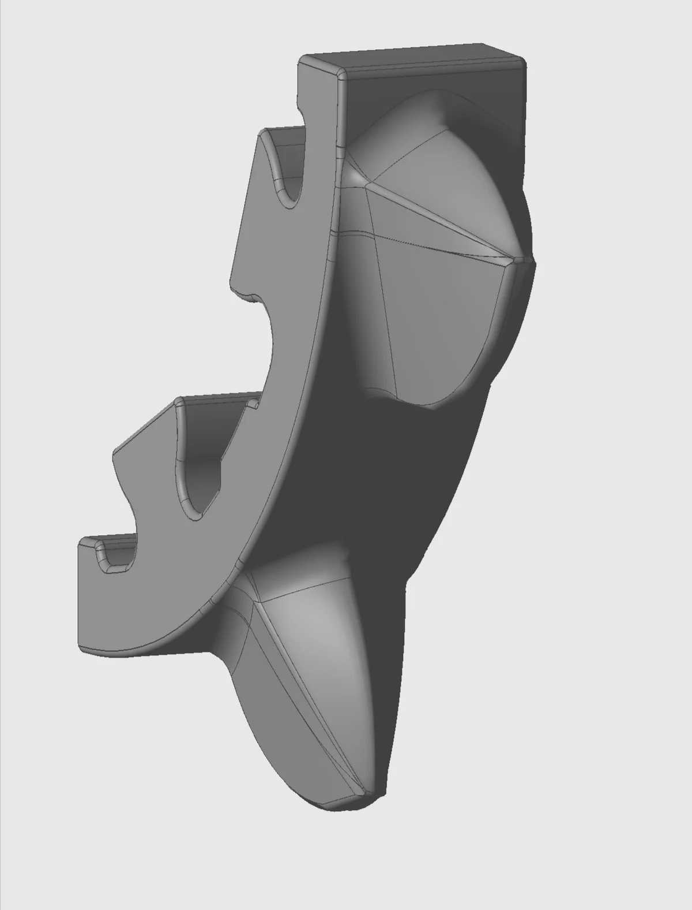
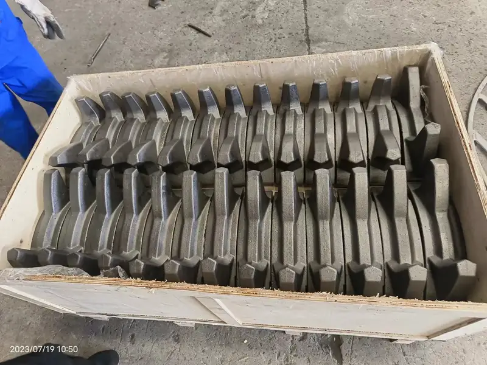
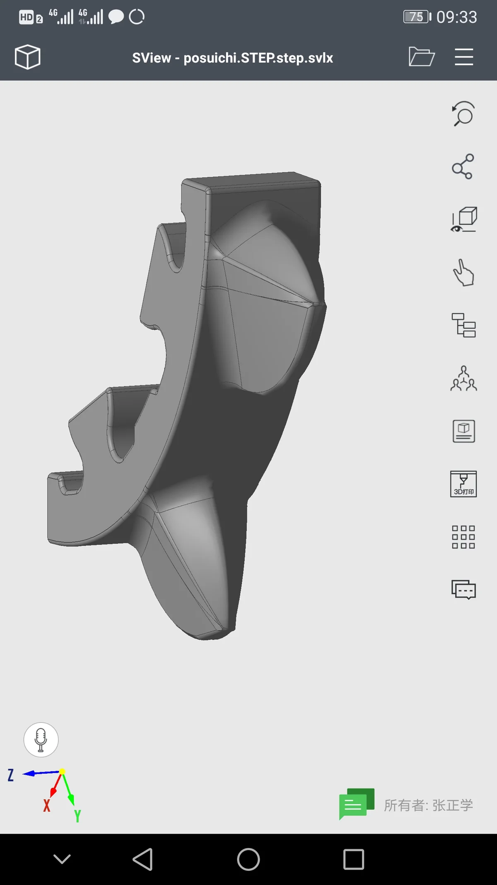

Overview
Technical Specs
耐磨件
ABON
ABON分级破耐磨件
ABON低速分级机专用于煤炭、盐和软矿物的初碎和二碎。双轴设计配合大直径破碎辊以最少粉矿处理物料。ABON分级机采用螺栓固定齿段便于快速维护。安然科技提供三个重量等级（6.6Kg、8.6Kg、25Kg）的分级齿板，ZG30CrMnMo和ZG30CrNiMo合金选项适配不同破碎工况。
Typical Applications
Factory
生产实拍 — 安然科技车间



.webp)
.webp)
.webp)

.webp)
.webp)
.webp)


.webp)
.webp)
Technical Data
ABON分级破耐磨件 — 型号
| 型号 | 耐磨件 |
|---|---|
| 型号 | 08/20 to 16/400CHD |
| 处理能力 | Up to 12,000 tph |
| 最大给料粒度 | Up to 2,000mm |
| 轴转速 | Low speed (10-40 rpm) |
| 驱动 | Direct drive, high torque |
| 型号 | ZG30C |
| 型号 | ZG30C, ters 25K |
| 型号 | of 12, of 10, mid 1960 |
| 材料牌号 | ZG30CrMnMo, ZG30CrNiMo |
| 处理能力 | 2,500TPH, 4,000TPH, 3,500TPH |
| 型号 | mid 1960, of 10, of 12 |
| 最大给料粒度 | 2,000mm |
兼容型号（OEM目录）
6/250 HSC7/250HSC8/220CHD8/300CCTD8/300 CHD
OEM备件清单
| 备件名称 | 件号 | 材质（中国标准） |
|---|---|---|
| √ | ||
| 综合刮板系统Integrated scraper system |
耐磨件
齿板：Mn18Cr2或铬钼合金钢。锤头：高锰钢，可选复合齿帽。刮料板：铬钼钢。
耐磨件
ABON分级破耐磨件 耐磨件
型号
08/20 to 16/400CHD
耐磨件
齿板、锤头、刮料板
6.6公斤齿板（一级）
ABON分级机轻载齿段；适用于二次和三次破碎软质物料
ZG30CrMnMoGB ZG30CrMnMo / 铬锰钼合金铸钢
硬度HRC 45-55
冲击韧性AKV 10-15J
抗拉强度≥ 850 MPa
屈服强度≥ 650 MPa
| Grade | C | Si | Mn | Cr | Mo |
|---|---|---|---|---|---|
| ZG30CrMnMo | 0.26-0.34 | 0.40-0.80 | 0.90-1.30 | 0.90-1.30 | 0.15-0.25 |
针对轻载工况优化，耐磨性优异，成本效益高
8.6公斤齿板（二级）
ABON分级机中载齿段；适用于一次破碎中等硬度物料
ZG30CrMnMoGB ZG30CrMnMo / 铬锰钼合金铸钢
硬度HRC 45-55
冲击韧性AKV 10-15J
抗拉强度≥ 850 MPa
屈服强度≥ 650 MPa
| Grade | C | Si | Mn | Cr | Mo |
|---|---|---|---|---|---|
| ZG30CrMnMo | 0.26-0.34 | 0.40-0.80 | 0.90-1.30 | 0.90-1.30 | 0.15-0.25 |
中载工况均衡性能；比一级寿命长15-20%
25公斤齿板（三级）
ABON分级机重载齿段；专用于一次破碎高硬高磨蚀物料；镍强化合金提供卓越韧性
ZG30CrNiMoGB ZG30CrNiMo / 镍强化铬钼合金铸钢
硬度HRC 45-55
冲击韧性AKV 20-25J
抗拉强度≥ 950 MPa
屈服强度≥ 750 MPa
| Grade | C | Si | Ni | Cr | Mo |
|---|---|---|---|---|---|
| ZG30CrNiMo | 0.26-0.34 | 0.40-0.80 | 0.90-1.30 | 0.90-1.30 | 0.15-0.25 |
添加镍使韧性比ZG30CrMnMo高60-70%；适用于高冲击一次破碎工况
段螺栓和螺母
高强度紧固件固定ABON分级机齿段到轴上；关键安全部件
AISI 4140GB 42CrMo / AISI 4140
硬度HRC 28-55 (quenched & tempered)
冲击韧性AKV ≥ 45J
抗拉强度≥ 1080 MPa
屈服强度≥ 930 MPa
| Grade | C | Si | Mn | Cr | Mo |
|---|---|---|---|---|---|
| AISI 4140 | 0.38-0.43 | 0.15-0.35 | 0.75-1.0 | 0.8-1.1 | 0.15-0.25 |
锻制高强度钢，用于轴、螺栓和高应力部件
AISI 4150HGB 50CrMoA / AISI 4150H
硬度HRC 30-58 (quenched & tempered)
冲击韧性AKV ≥ 35J
抗拉强度≥ 1150 MPa
屈服强度≥ 1000 MPa
| Grade | C | Si | Mn | Cr | Mo |
|---|---|---|---|---|---|
| AISI 4150H | 0.47-0.54 | 0.15-0.35 | 0.70-1.05 | 0.75-1.20 | 0.15-0.25 |
优质锻钢用于锤轴和环锤；卓越的抗疲劳性能
为什么选择安然科技
- 三级齿板系统：6.6kg(ZG30CrMnMo)二碎，8.6kg(ZG30CrMnMo)初碎，25kg(ZG30CrNiMo)重型初碎韧性高67%
- ZG30CrNiMo重型25kg齿板：Ni替代使AKV达20-25J（vs ZG30CrMnMo的10-15J），防止更大弯矩下断裂
- 全ABON覆盖：5/130 CCLK至大型号